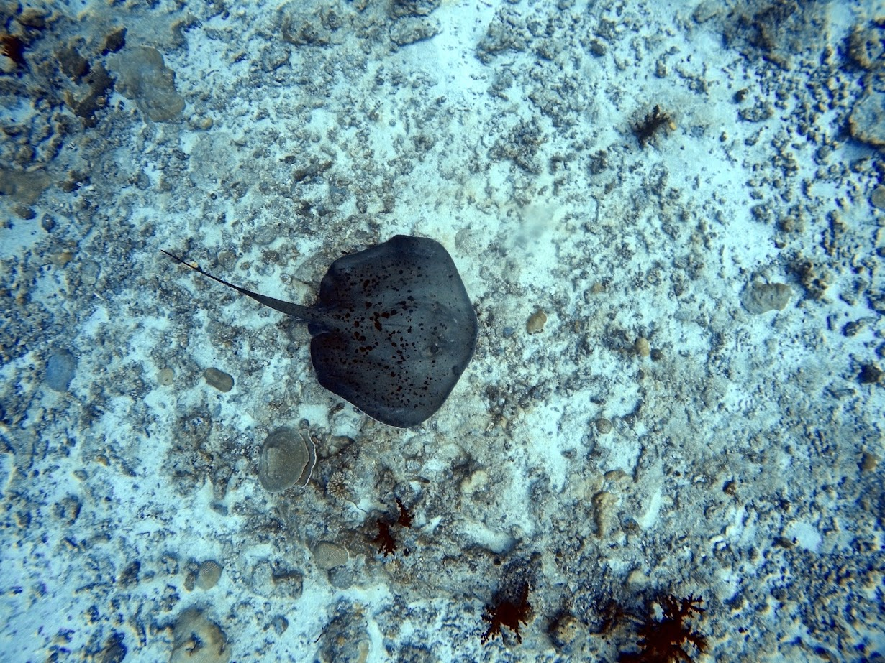
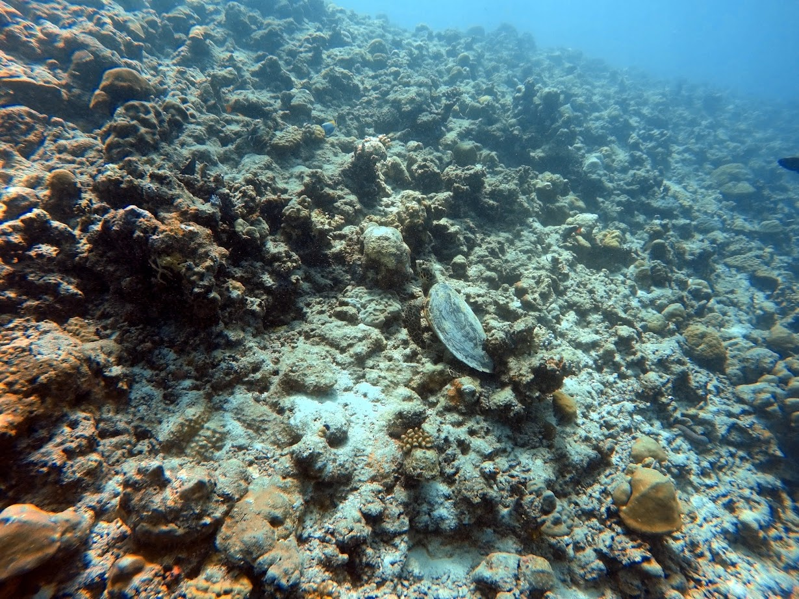
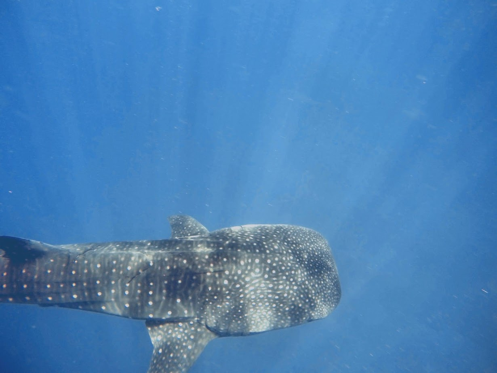

בעלי חיים בשונית אלמוגים
בשנת 2021 אני ואבא שלי טסנו לספארי צלילות באיי המלדיבים, מדינה מורכבת מארכיפלג של אטולים,
שנמצאת כ-600 קילומטר דרום-מזרח מהקצה של הודו. האקלים הטרופיים באיים מאפשר למגוון רחב של בעלי חיים תת-ימיים ושוניות אלמוגים לרוב. תעשיית התיירות במדינה רחבה, ממלונות פאר, להפלגות בין האיים הרבים, וכמובן, אתרי צלילה רבות מעוד.
ברצוני להראות כמה דוגמאות מהמגוון הרחב של הדגים שחיים בחבל האיים הנפלא הזה.
| שם | תמונה או סרטון | מיקום בתמונה | מעט על |
|---|---|---|---|
| זהרון | נראה בסביבות 0:33, ליד הקצה של ההגה של הספינה הטרופה, כאשר הוא פורש את סנפיריו. |
הצלילה נארכה באתר של ספינה טרופה ליד האי פסדו.
הזהרון הינו דג טורף בעל קוצים המכילים ערס בסנפיריו, המגינים עליו. הצבעים הבולטים נועדים כאזהרה לטורפים, שלדג זה
יש
ערס קטלני.
|
|
| טריגון שחור-נקודות |  | נראה בבירור באמצע התמונה. |
הצלילה נארכה בשונית ליד האי מיארו קאנדו.
הטריגון הינו דג שבדומה לכרישים, יש לו שלד סחוסי. יש לו מבנה גוף שטוח, כאשר עיניו על חלקו העליון והפה בחלקו התחתון, עם זנב שבקצהו יש עוקץ ערסי שמשמש כאימצעי הגנה. הם ניזונים מחסרי חוליות כמו סרטנים.
|
| צבי ים |  | נראה בבירור באמצע התמונה. |
הצלילה נארכה בשונית ליד האי דיגורה.
צבי ים ירוקים הינם זוחלים השוהים בים, ומטילים את ביצהם על החוף. הם נודדים למרחק רב לשם ההתלות שלהם, ואפילו מגיעים לחופים בארץ. הם ניזונים בעיקר מעשבי ים ואצות. למרבה הצער, צב הים הינו נמצא
בסכנת הכחדה.
|
| כריש זנבתן חלודי | ניתן לראות כמה כרישים ממין זה, אחד קרוב מעוד. |
סרטון זה צולם ליד האי אלימת'ה,
מיתחת לספינה שלנו. כרישים אלו ידועים על כך שהם אינם תוקפנים, כל עוד שלא מפריעים להם. כמובן לא מומלץ להתקרב כאשר הם אוכלים, אבל ניתן להיתקרב מבלי להסתכן. ניתן לראותם שוכבים על הקרקעית לעיתים קרובות.
|
|
| מנטת השונית | ניתן לראות שתי מנטות שוחות לכיוון הצלם. |
הצלילה נארכה בשונית ליד האי מופושי.
המנטה הינו אחד המראות המרהיבות במלדיבים. בדומה לטריגון ולכרישים, למנטה יש שלד סחוסי. הוא ניזון מפלנקטון, אורגניזמים זעירים אשר חיים במים. הם מסוגלים לגדול לרוחבים של עד 5 מטר. אתר צלילה זה הוא מאין תחנת ניקוי, שבשונית חיים דגים כקטנים אשר מנקים את הדגים שחיים שם, והמנטות יודעות להגיע למקומות כאלה כדי שדגים אלו ינקו אותם.
|
|
| כריש לוויתני |  | נראה בבירור באמצע התמונה. |
הכריש הלוויתני הוא מחזה מרגש אך כדי למצוא אותו הכל תלוי במזל. הענק העדין הזה הוא חלק ממין הכרישאים, אך אינו ניזון מבשר כמו בני משפחתו, אך מפלנקטון. הוא מסוגל לגדול לאורך של יותר מ15 מטר.
|